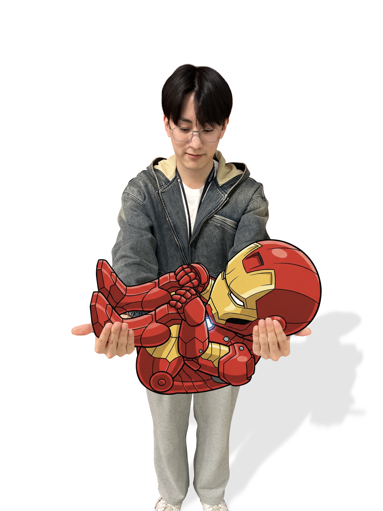
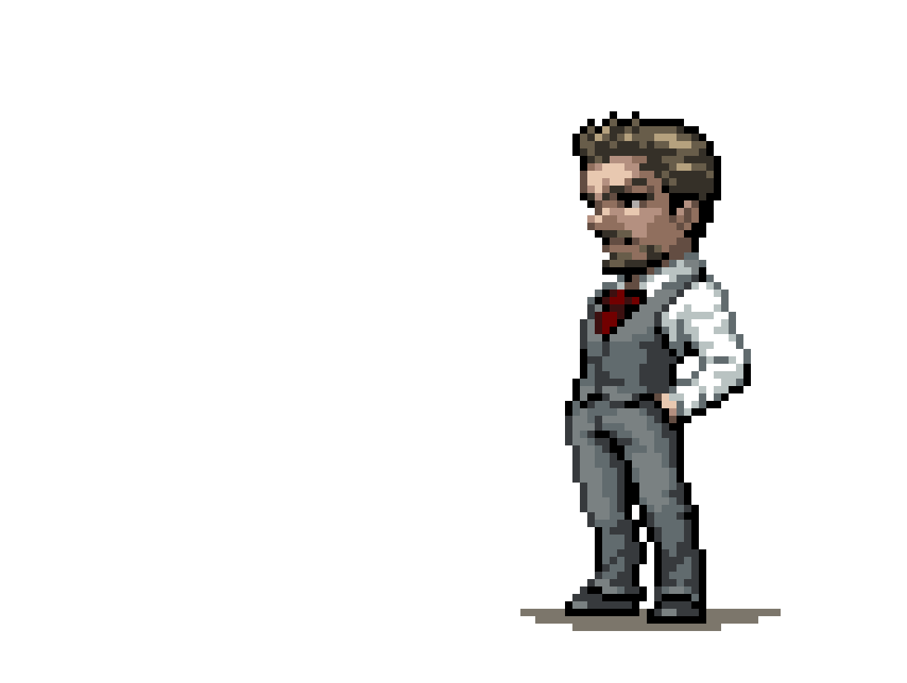
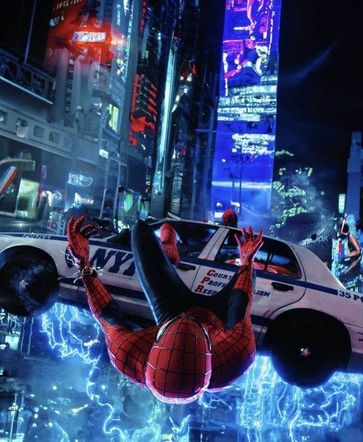

Personal Homepage
영화 속 히어로가
되고 싶었던 사람
아이언맨을 보며 꿈을 키우고, 스파이더맨을 보며 인생을 배웠습니다.
좋아하는 영화와 향수, 노래,
그리고 오늘 배운 것들이 이 페이지에 담겨 있습니다.

Basic Info
기본 정보
| 닉네임 | 스타크 |
|---|---|
| MBTI | INTJ |
| 취미 | 영화관 가서 영화 보기, 노래 듣기, 향수 모으기, 시향하기 |
| 좋아하는 음식 | 돈까스, 햄버거, 고기 |
| 요즘 관심사 | 객체 지향, 우테코, 아이언맨, 향수, 헤드폰 |
About Me
자기소개
영화를 정말 좋아해서 영화관 아르바이트도 오랫동안 했습니다. 새로운 영화를 누구보다 빨리 보고, 극장 특유의 분위기 안에서 하루를 보내는 시간이 저한테는 꽤 특별했습니다. 그래서 지금도 영화를 보는 일은 단순한 취미라기보다 저를 가장 잘 설명해 주는 감각에 가깝습니다.
인생 영화는 아이언맨입니다. 초등학교 1학년 때 처음 아이언맨 1이 개봉했고, 고등학교를 졸업할 즈음
아이언맨이 마지막을 맞이해서 제 학창 시절을 함께 지나온 인물처럼 느껴졌습니다. 그래서 더 애틋한
마음이 남아 있습니다.
어메이징 스파이더맨 영화도 정말 좋아하는데, 그 시작에는 배우 앤드류 가필드를
좋아하게 된 이유가 큽니다.
My Gallery
나만의 갤러리
오래 남겨 두고 싶은 장면들을 9장의 사진으로 모아 둔 작은 기록입니다.
사진을 누르면 원본 비율에 가깝게 조금 더 크게 볼 수 있습니다.
Favorite Perfumes
내가 좋아하는 향수
자주 시향하고 다시 떠올리게 되는 향 두 가지입니다.
My Playlist
나의 플레이리스트
자주 반복해서 듣는 곡들을 담아 둔 스포티파이 플레이리스트입니다.
Spotify Playlist
StarK Daily Rotation
이동할 때나 집중할 때 자주 틀어 두는 곡들을 모아 둔 플리입니다. 사이트 안에서 바로 재생할 수 있고, 원하면 Spotify 앱에서도 이어서 들을 수 있습니다.
Spotify에서 열기Life Works
나를 울린 인생 작품
오래 남아서 자꾸 다시 꺼내 보게 되는 작품 두 가지입니다.
-
01
아이언맨
토니 스타크가 자기 확신과 책임감을 동시에 배워 가는 과정이 오래 남는 작품입니다.
유머와 카리스마, 그리고 성장 서사가 모두 들어 있어서 여러 번 다시 보게 됩니다. -

02어메이징 스파이더맨 2
피터 파커의 청춘과 책임감, 사랑과 상실이 한꺼번에 밀려오는 작품이라 유독 오래 남습니다.
저는 이 영화를 통해 사랑과 연애 모두를 배웠습니다 ㅎㅎ
Today I Learned
TIL
오늘 새롭게 배운 내용을 날짜, 주제, 내용으로 남기는 공간입니다.
아직 등록된 TIL이 없습니다. 오늘 배운 내용을 첫 번째로 남겨 보세요.